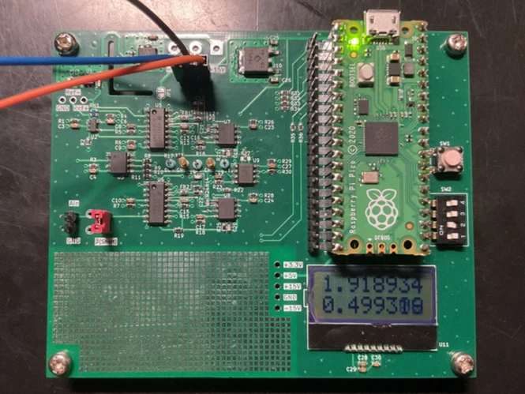
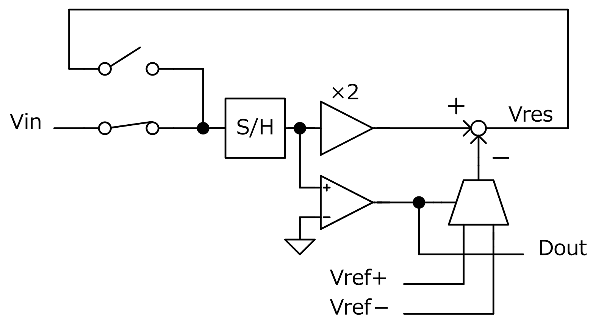
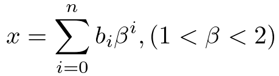
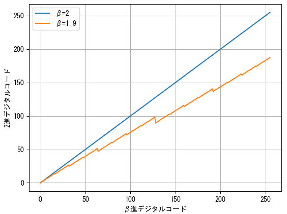
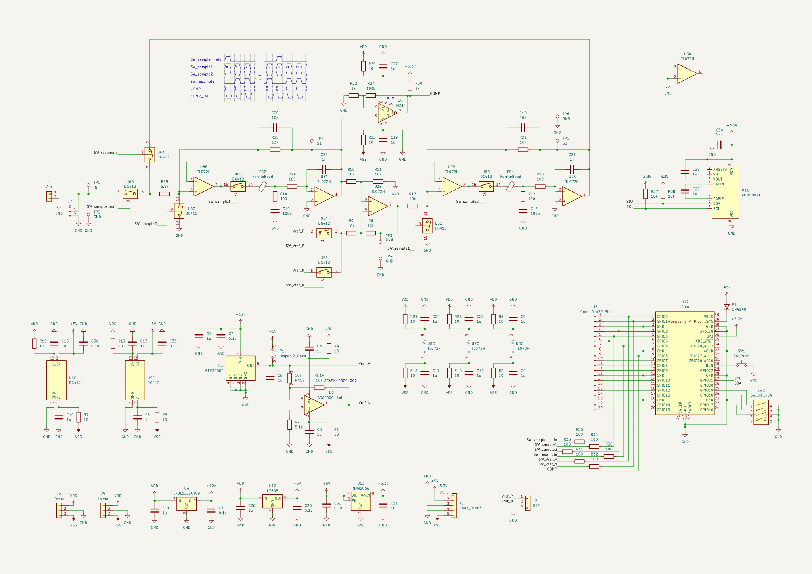
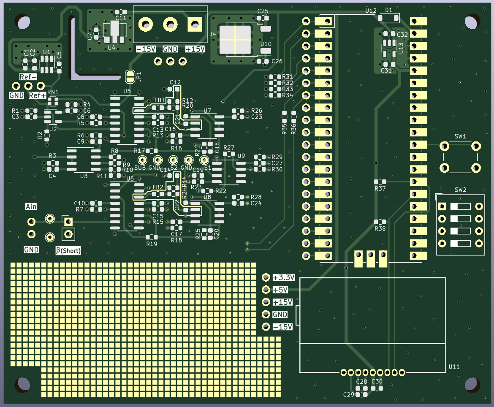
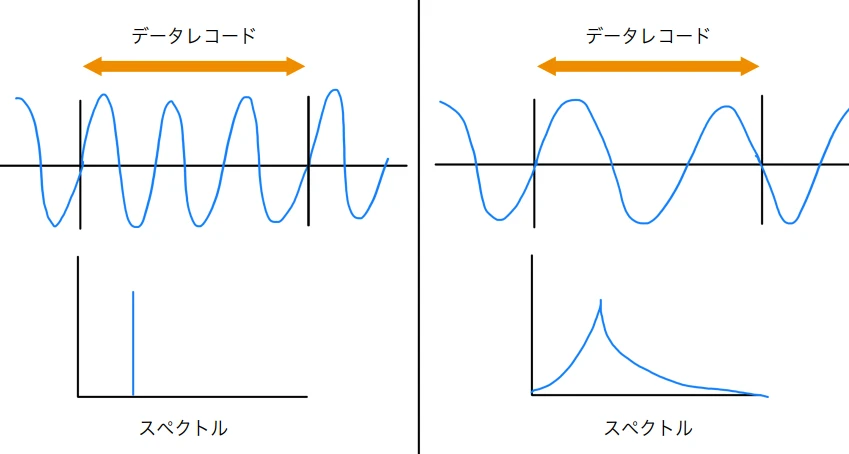
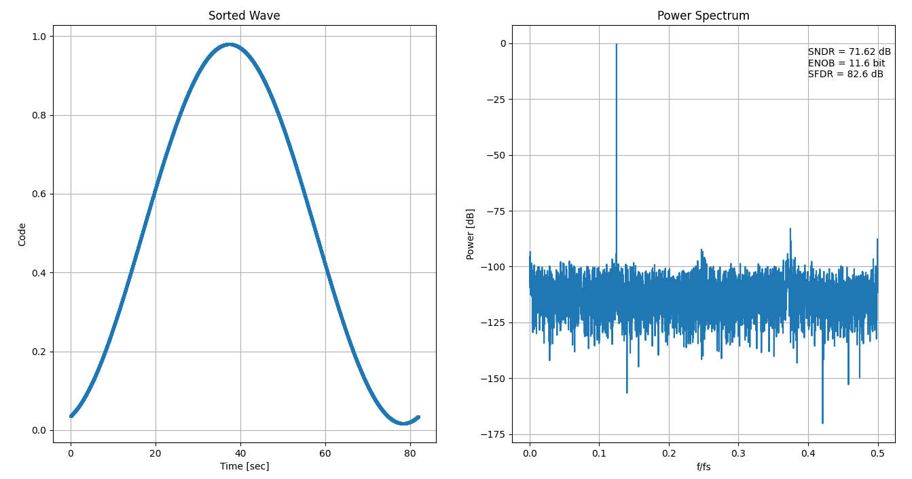

小さな回路規模で高分解能を実現できるとされるサイクリックADCを作りました。1つのステージを繰り返し使用することでミスマッチの少ない高分解能な変換を実現できます。今回は β展開という手法を用いることで汎用部品で高精度 (ENOB=12bit) を達成することを目標としました。

製作したサイクリックADC
サイクリックADCは、次のようなブロック図によって表現されます。

サイクリックADCのブロック図
変換動作の初めに、サンプリングされた電圧 Vin を GND と比較します。その結果に応じて、2倍した Vin に Vref を足し引きします。この操作によって生まれた残差信号 Vres を再び Vin としてサンプリング(リサンプリング) します。コンパレータの出力が各bit の変換結果になるので、これらの操作を必要な分解能に応じた回数繰り返すことで AD変換を行うことができます。
サイクリックADCが高精度な変換を行うためには正確な 2倍増幅が必要です。また、S/H回路やオペアンプ、コンパレータなどにオフセットがあると、リサンプリングの時に誤差が蓄積して飽和してしまう原因になります。正確な 2倍増幅や低オフセットを実現しようとするとどうしても高価なオペアンプや抵抗器が必要になってしまうので、今回は β展開というものを用いることでこの問題を解決します。
β展開とは、n進数展開の整数n を実数に拡張したものです。β展開による n bit のデジタルコードの復号は次の式で表現されます。次の式により 2進数に変換したデジタルコードを得ることができます。

β展開の復号式
これを、横軸をデジタルコード、縦軸を復号した 2進数としたグラフにすると次のようになります。

2進コードとβ進コードの比較
β=2 であればこのグラフは当然 1次関数となりますが、β<2 のときには途中で何度も折れ曲がる形になります。β=2 のときに比べて傾きが小さくなるので、増幅率の精度やオフセットの要求を緩和することができます。
もう一つの特徴として、1つの 2進コードに対して複数の β進コードが対応していることがあげられます。これによってデジタルコードが冗長性を持つため、変換途中でコンパレータの比較誤りがあっても変換精度を保つこともできます。実際の回路での β の値は設計値とずれますが、デジタルコードからその値を推測することが可能です。
つまり、β展開を用いたサイクリックADC は、アナログ回路に起因する変換誤差をデジタル的に補正することが可能であるといえます。
サイクリックADC の動作を実現するための回路を設計しました。

設計したサイクリックADCの回路図
S/H回路には反転型を用いました。反転型の S/H回路では抵抗器の比率で利得を設定することができます。今回は R19 と R25 で 約1.91倍 の利得を設定しています。この利得の値がそのまま βの値になります。βの値は校正時に推測できるので 2より小さい適当な値であれば良いです。1に近い値であるほど冗長性が増す一方、ある量子化誤差を得るために必要なステップ数が増加するので、サンプリング周波数と冗長性がトレードオフになります。
サンプリングキャパシタである C21 と C22 には、誘電体吸収の少ない C0G 特性のものを使います。今回の構成では、CMOS SW のチャージインジェクションはあまり大きな問題にはなりません。これは、反転型 S/H回路では CMOS SW の両端電圧が常に 0V で動作するためです。チャージインジェクションによって注入される電荷量は入力電圧依存性を持ちますが、入力電圧が 0V であるならその量は常に一定になり、一定のオフセット電圧として現れます。一定のオフセットであれば、β展開の効果によって歪みの原因にはなりません。
コンパレータは β倍された後の電圧を比較できる位置に置きました。サンプルされた電圧を直接比較すると高入力インピーダンスなコンパレータが必要になってしまうからです。この位置にすることでコンパレータの感度を高めることができるという副作用もあります。
今回の ADC で使っている主なオペアンプは TL072H です。このオペアンプは、有名な TL072 の CMOS版のようで、諸特性が改善された現行製品のようです。オフセットドリフトが小さいので採用しました。
回路の制御は Raspberry Pi Pico で行います。RP2040 の PIO を使うことで時間分解能が非常に高い制御信号を作り出すことができます。
Raspberry Pi Pico には DCDCコンバータが載っていますが、これを使わず外部の三端子レギュレータで 3.3V を作っています。これを行うためには 3V3_EN 端子を GND に落とし、USB からの電流が流れ込まないように VSYS 端子にダイオードを付ければよいです。Pico の DCDCコンバータは RT6150B というチップです。ENピンが Low のときには出力トランジスタが OFF になることで負荷が切り離されるので、出力ピンに電圧がかかっても問題ないようです。(データシート上では未定義な使い方のようですが……)
4層基板で設計を行いました。

設計した基板のCAD画像
S/H 用のキャパシタ周辺の高インピーダンス信号線はガードリングを用いて保護しています。
基準電圧IC に熱が伝わりにくいようスリットを入れてみました。
ADC のダイナミック特性の評価を FFT を用いて行う際には、適切な選択が難しいので窓関数を使うことを避けたいです。しかし、一般的には窓関数を用いない FFT (矩形窓) ではスペクトル漏れを生じます。スペクトルの漏れ、つまり特定の周波数成分のエネルギーの拡散があると、ADC の重要な性能指標である SNR の算出が困難になります。そこで、コヒーレントサンプリングという方法を用いることでスペクトル漏れを無くすことができます。コヒーレントサンプリングは、サンプリングされたデータレコードの中に整数個の正弦波サイクルが含まれるようにサンプリング周波数と入力周波数を決定する手法です。FFT をかけるデータレコードの始まりと終わりが連続的につながるので、窓関数を用いることなく鋭いスペクトルを出すことができます。

左：コヒーレントサンプリング 右：非コヒーレントサンプリング
データレコードの始まりと終わりが連続的でないとスペクトル漏れが生じる。
作った ADC のダイナミック特性評価の結果がこちらです。

ダイナミック特性評価のグラフ
サンプリング周波数 100Hz で、ENOB=11.6bit の性能を確認できました。所有している安価なファンクションジェネレータは、長時間の出力でチャンネル間の位相誤差が増大してしまうのでスペクトル漏れが少し出てしまいます。目標とした ENOB=12bit には少し足りない結果になりましたが、ソフトの改良によって向上を目指してみようと思います。
[1] R. Suzuki, T. Maruyama, H. San, K. Aihara, M. Hotta, 「Robust Cyclic ADC Architecture Based on β-Expansion」, IEICE Trans. Electron., vol. E96.C, no. 4, pp. 553–559, 2013.
[2] Luis F. Chioye, 「Choose The Right FFT Window Function When Evaluating Precision ADCs」